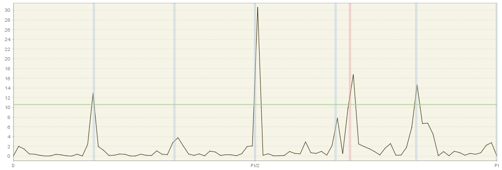

Spectral Analysis Principles and Tools
In this chapter
This chapter provides some guidance on spectral analysis, which will allow to understand the principle of various spectral analysis tools available in JDemetra+, via Graphical User Interface and R packages.
explanation of spectral graphs here, but description in GUI chap
outputs of tests ?
description of spectral graphs in GUI can be found here
Spectral analysis concepts
A time series \(x_{t}\) with stationary covariance, mean \(μ\) and \(k^{th}\) autocovariance \(E((x_{t}-\mu)(x_{t-k}\mu))=\gamma(k)\) can be described as a weighted sum of periodic trigonometric functions: \(sin(\omega t)\) and \(cos(\omega t)\), where \(\omega=\frac{2*pi}{T}\) denotes frequency. Spectral analysis investigates this frequency domain representation of \(x_{t}\) to determine how important cycles of different frequencies are in accounting for the behaviour of \(x_{t}\).
Assuming that the autocovariances \(\gamma(k)\) are absolutely summable(\(\sum_{k=-\infty}^{\infty}|\gamma(k)|<\infty\)), the autocovariance generating function, which summarizes these autocovariances through a scalar valued function, is given by Equation 1 (HAMILTON, J.D. (1994)).
\[ acgf(z)=\sum_{k=-\infty}^{\infty}{z^{k}\gamma(k)} \tag{1}\]
where \(z\) denotes a complex scalar.
Once the Equation 1 is divided by \(\pi\) and evaluated at some \(z{=e}^{-i\omega}=cos\omega-isin\omega\), where \(i=\sqrt{-1}\) and \(\omega\) is a real scalar, \(-\infty < \ \omega < \infty\), the result of this transformation is called a population spectrum \(f(\omega)\)for \(\ x_{t}\), given in Equation 2 (HAMILTON, J.D. (1994)).
\[ f(\omega)=\frac{1}{\pi}\sum_{k=-\infty}^{\infty}{e^{-ik\omega}\gamma(k)} \tag{2}\]
Therefore, the analysis of the population spectrum in the frequency domain is equivalent to the examination of the autocovariance function in the time domain analysis; however it provides an alternative way of inspecting the process. Because \(f(\omega)\text{dω}\) is interpreted as a contribution to the variance of components with frequencies in the range \((\omega,\ \omega+d\omega)\), a peak in the spectrum indicates an important contribution to the variance at frequencies near the value that corresponds to this peak.
As \(e^{-i\omega}=cos\omega-isin\omega\), the spectrum can be also expressed as in Equation 3.
\[ f(\omega)=\frac{1}{\pi}\sum_{k=-\infty}^{\infty}{(cos\omega k-isin\omega k)\gamma(k)} \tag{3}\]
Equation 3 can be presented as:
\[ f(\omega)=\frac{1}{\pi}[\ \gamma(0)+2\sum_{k=1}^{\infty}{\ \gamma(k)}cos\text{ωk}] \tag{4}\]
This implies that if autocovariances are absolutely summable the population spectrum exists and is a continuous, real-valued function of \(\omega\). Due to the properties of trigonometric functions \((\cos(-\omega k)=\cos(\text{ωk})\) and \(\cos(\omega+2\pi j)k=cos(\omega k))\) the spectrum is a periodic, even function of \(\omega\), symmetric around \(\omega=0\). Therefore, the analysis of the spectrum can be reduced to the interval \((-\pi,\pi)\). The spectrum is non-negative for all \(\omega \in (-\pi,\pi)\).
The shortest cycle that can be distinguished in a time series lasts two periods. The frequency which corresponds to this cycle is \(\omega=\pi\) and is called the Nyquist frequency. The frequency of the longest cycles that can be observed in the time series with \(n\) observations is \(\omega=\frac{2\pi}{n}\) and is called the fundamental (Fourier) frequency.
Note that if \(x_{t}\) is a white noise process with zero mean and variance \(\sigma^{2}\), then for all \(|k|> 0\) \(\gamma(k)=0\) and the spectrum of \(x_{t}\) is constant (\(f(\omega)=\frac{\sigma^{2}}{\pi}\)) since each frequency in the spectrum contributes equally to the variance of the process (BROCKWELL, P.J., and DAVIS, R.A. (2002)).
The aim of spectral analysis is to determine how important cycles of different frequencies are in accounting for the behaviour of a time series. Since spectral analysis can be used to detect the presence of periodic components, it is a natural diagnostic tool for detecting trading day effects as well as seasonal.
Among the tools used for spectral analysis are the autoregressive spectrum and the periodogram.
The explanations given in the subsections of this node derive mainly from DE ANTONIO, D., and PALATE, J. (2015) and BROCKWELL, P.J., and DAVIS, R.A. (2006).
Spectral density of an ARIMA model
Estimation
Method 1: Periodogram
For any given frequency \(\omega\) the sample periodogram is the sample analog of the sample spectrum. In general, the periodogram is used to identify the periodic components of unknown frequency in the time series. X-13ARIMA-Seats and Tramo-Seats use this tool for detecting seasonality in raw time series and seasonally adjusted series. Apart from this it is applied for checking randomness of the residuals from the ARIMA model.
To define a periodogram, first consider a vector of complex numbers
\[ \mathbf{x}=\begin{bmatrix} x_{1} \\ x_{2} \\ . \\ . \\ . \\ x_{n} \\ \end{bmatrix} \in \mathbb{C}^{n} \tag{5}\]
where \(\mathbb{C}^{n}\) is the set of all column vectors with complex-valued components.
The Fourier frequencies associated with the sample size \(n\) are defined as a set of values \(ω_{j}=\frac{2\pi j}{n}\), \(j=-[\frac{n-1}{2}],\ldots,[\frac{n}{2}]\), \(-\pi< \omega_{j} \leq \pi\), \(j\in F_{n}\), where \({[n]}\) denotes the largest integer less than or equal to \(n\). The Fourier frequencies, which are called harmonics, are given by integer multiples of the fundamental frequency \(\ \frac{2\pi}{n}\).
Now the \(n\) vectors \(e_{j}=n^{-\frac{1}{2}}(e^{-i\omega_{j}},e^{-i{2\omega}_{j}},\ldots,e^{-inω_{j}})^{'}\) can be defined. Vectors \(e_{1},\ldots, e_{n}\) are orthonormal in the sense that:
\[ {\mathbf{e}_{j}^{*}\mathbf{e}}_{k}=n^{-1}\sum_{r=1}^{n}e^{ir(\omega_{j}-\omega_{k})}={ \begin{matrix} 1,\ if\ j=k \\ 0,\ if\ j \neq k \\ \end{matrix}} \tag{6}\]
where \(\mathbf{e}_{j}^{*}\) denotes the row vector, which \(k^{th}\) component is the complex conjugate of the \(k^{th}\) component of \(\mathbf{e}_{j}\). These vectors are a basis of \(F_{n}\), so that any \(\mathbf{x}\in\mathbb{C}^{n}\) can be expressed as a sum of \(n\) components:
\[ \mathbf{x}=\sum_{j=-[\frac{n-1}{2}]}^{[\frac{n}{2}]}{a_{j}\mathbf{e}_{j}} \tag{7}\]
where the coefficients \(a_{j}=\mathbf{e}_{j}^{*}\mathbf{x}=n^{-\frac{1}{2}}\sum_{t=1}^{n}x_{t}e^{-it\omega_{j}}\) are derived from Equation 7 by multiplying the equation on the left by \(\mathbf{e}_{j}^{*}\) and using Equation 5.
The sequence of \(\{a_{j},j\in F_{n}\}\) is referred as a discrete Fourier transform of \(\mathbf{x}\mathbb{\in C}^{n}\) and the periodogram \(I(\omega_{j})\) of \(\mathbf{x}\) at Fourier frequency \(\omega_{j}=\frac{2\pi j}{n}\) is defined as the square of the Fourier transform \(\{a_{j}\}\) of \(\mathbf{x}\):
\[ {I(\omega_{j})\mathbf{=}{|a_{j} |^{2}}_{\ }=n^{-\ 1}|\sum_{t=1}^{n}x_{t}e^{-it\omega_{j}} |^{2}}_{\mathbf{\ }} \tag{8}\]
From Equation 6 and Equation 7 it can be shown that a periodogram decomposes the total sum of squares \(\sum_{t=1}^{n}|x_{t} |^{2}\) into a sum of components associated with the Fourier frequencies \(ω_{j}\):
\[ \sum_{t=1}^{n}{|x_{t}|}^{2}=\sum_{j=-[\frac{n-1}{2}]}^{[\frac{n}{2}]}|a_{j}|^{2}=\sum_{j=-[\frac{n-1}{2}]}^{[\frac{n}{2}]}{I(\omega_{j})} \tag{9}\]
If \(\ \mathbf{x\ \in}\ {R}^{n}\), \(\omega_{j}\) and \({-\omega}_{j}\) are both in \([-\pi,-\pi]\) and \(a_{j}\) is presented in its polar form (i.e. \(a_{j}=r_{j}\exp(i\theta_{j})\)), where \(r_{j}\) is the modulus of \(a_{j}\), then Equation 7 can be rewritten in the form:
\[ \mathbf{x}=a_{0}\mathbf{e}_{0}+\sum_{j=1}^{[\frac{n-1}{2}]}{ {2^{1/2}r}_{j}{(\mathbf{c}}_{j}\cos\theta_{j}{-\mathbf{s}}_{j}\sin\theta_{j})+a_{n/2}\mathbf{e}_{n/2}} \tag{10}\]
The orthonormal basis for \({R}^{n}\) is \(\{\mathbf{e}_{0},\mathbf{c}_{1},\mathbf{s}_{1},\ldots,\mathbf{c}_{[\frac{n-1}{2}]},\mathbf{s}_{[\frac{n-1}{2}]},\mathbf{e}_{\frac{n}{2}(excluded\ if\ n\ is\ odd)}\}\), where:
\(\mathbf{e}_{0}\) is a vector composed of n elements equal to \(n^{-1/2}\), which implies that \(\mathbf{a}_{0}\mathbf{e}_{0}={(n^{-1}\sum_{t=1}^{n}x_{t},\ldots,n^{-1}\sum_{t=1}^{n}x_{t})}^{'}\);
\[ \mathbf{c}_{j}=(\frac{n}{2})^{-1/2}{(\cos\omega_{j},\cos{2\omega}_{j},\ldots,\cos{n\omega_{j}})}^{'}, for 1 \leq j \leq [\frac{(n-1)}{2}] \]
\[ \mathbf{s}_{j}={(\frac{n}{2})}^{-1/2}{(\sin{\omega_{j}},\sin{2\omega_{j}},\ldots,\sin{n\omega_{j}})}^{'},\ for\ 1 \leq j \leq [\frac{(n-1)}{2}] \]
\[ \mathbf{e}_{n/2}={(-(n^{-\frac{1}{2}}),n^{-\frac{1}{2}},\ldots,{-(n)}^{-\frac{1}{2}}),n^{-\frac{1}{2}})}^{'} \]
Equation 9 can be seen as an OLS regression of \(x_{t}\) on a constant and the trigonometric terms. As the vector of explanatory variables includes \(n\) elements, the number of explanatory variables in Equation 9 is equal to the number of observations. HAMILTON, J.D. (1994) shows that the explanatory variables are linearly independent, which implies that an OLS regression yields a perfect fit (i.e. without an error term). The coefficients have the form of a simple OLS projection of the data on the orthonormal basis:
\[ \widehat{a}_{0}=\frac{1}{\sqrt{n}}\sum_{t=1}^{n}x_{t} \tag{11}\]
\[ \widehat{a}_{n/2}=\frac{1}{\sqrt{n}}\sum_{t=1}^{n}{(-1)}^{t}x_{t}( \text{only when n is even}) \tag{12}\]
\[ \widehat{a}_{0}=\frac{1}{\sqrt{n}}\sum_{t=1}^{n}x_{t} \tag{13}\]
\[ {\widehat{\alpha}}_{j}=2^{1/2}r_{j}\cos{\theta_{j}}={(\frac{n}{2})}^{-1/2}\sum_{t=1}^{n}x_{t}\cos{(t\frac{2\pi j}{n})}, j =1,\ldots,[\frac{n-1}{2}] \tag{14}\]
\[ {\widehat{\beta}}_{j}=2^{1/2}r_{j}\sin{\theta_{j}}={(\frac{n}{2})}^{-1/2}\sum_{t=1}^{n}x_{t}\sin{(t\frac{2\pi j}{n})}, j=1,\ldots,[\frac{n-1}{2}] \tag{15}\]
With Equation 9 the total sum of squares \(\sum_{t=1}^{n}|x_{t} |^{2}\) can be decomposed into \(2 \times [\frac{n-1}{2}]\) components corresponding to \(\mathbf{c}_{j}\) and \(\mathbf{s}_{j}\), which are grouped to produce the “frequency \(ω_{j}\)” component for \(1 \geq j \geq [\frac{n-1}{2}]\). As it is shown in the table below, the value of the periodogram at the frequency \(\omega_{j}\) is the contribution of the \(j^{\text{th}}\) harmonic to the total sum of squares \(\sum_{t=1}^{n}|x_{t} |^{2}\).
Decomposition of sum of squares into components corresponding to the harmonics
| Frequency | Degrees of freedom | Sum of squares decomposition |
|---|---|---|
| \(\omega_{0}\) (mean) | 1 | \({a_{0}^{2}}_{\ }=n^{-1}(\sum_{t=1}^{n}x_{t})^{2}=I(0)\) |
| \(\omega_{1}\) | 2 | \({2r_{1}^{2}}_{\ }=2{|a_{1}|}^{2}=2I(\omega_{1})\) |
| \(\vdots\) | \(\vdots\) | \(\vdots\) |
| \(\omega_{k}\) | 2 | \({2r_{k}^{2}}_{\ }=2{|a_{k}|}^{2}=2I(\omega_{k})\) |
| \(\vdots\) | \(\vdots\) | \(\vdots\) |
| \(\omega_{n/2}=\pi\) (excluded if \(n\) is odd) | 1 | \(a_{n/2}^{2}=I(\pi)\) |
| Total | \(\mathbf{n}\) | \(\sum_{\mathbf{t=1}}^{\mathbf{n}}\mathbf{x}_{\mathbf{t}}^{\mathbf{2}}\) |
Source: DE ANTONIO, D., and PALATE, J. (2015).
Obviously, if series were random then each component \(I(\omega_{j})\) would have the same expectation. On the contrary, when the series contains a systematic sine component having a frequency \(j\) and amplitude \(A\) then the sum of squares \(I(\omega_{j})\) increases with \(A\). In practice, it is unlikely that the frequency \(j\) of an unknown systematic sine component would exactly match any of the frequencies, for which periodogram have been calculated. Therefore, the periodogram would show an increase in intensities in the immediate vicinity of \(j\). (BOX, G.E.P., JENKINS, G.M., and REINSEL, G.C. (2007).
Note that in JDemetra+ the periodogram object corresponds exactly to the contribution to the sum of squares of the standardised data, since the series are divided by their standard deviation for computational reasons.
Using the decomposition presented in table above the periodogram can be expressed as:
\[ I(\omega_{j})\mathbf{=}\begin{matrix}r_{j}^{2}=\frac{1}{2}{(\alpha}_{j}^{2}+\beta_{j}^{2})=\ {\frac{1}{n}(\sum_{t=1}^{n}{x_{t}\cos{({t\frac{2\pi j}{n}}_{\ })\ }})}^{2}+\frac{1}{n}(\sum_{t=1}^{n}{x_{t}\sin(t\frac{2\pi j}{n})_{\ }})^{2} \\ \end{matrix} \tag{16}\]
where \(j=0,\ldots,[\frac{n}{2}]\).
Since \(\mathbf{x}-\overline{\mathbf{x}}\) are generated by an orthonormal basis, and \(\overline{\mathbf{x}}\mathbf{=}a_{0}\mathbf{e}_{0}\) Equation 9 can be rearranged to show that the sum of squares is equal to the sum of the squared coefficients:
\[ \mathbf{x}-a_{0}\mathbf{e}_{0}=\sum_{j=1}^{[(n-1)/2]}(\alpha_{j}\mathbf{c}_{j}+\beta_{j}\mathbf{s}_{j})+a_{n/2}\mathbf{e}_{n/2} \tag{17}\]
Thus the sample variance of \(x_{t}\) can be expressed as:
\[ n^{-1}\sum_{t=1}^{n}{(x_{t}-\overline{x})}^{2}=n^{-1}(\sum_{k=1}^{[(n-1)/2]}2{r_{j}}^{2} +{a_{n/2}}^{2}) \tag{18}\]
where \(a_{n/2}^{2}\) is excluded if \(n\) is odd.
The term \(2{r_{j}}^{2}\) in Equation 18 is then the contribution of the \(j^{\text{th}}\) harmonic to the variance and Equation 18 shows then how the total variance is partitioned.
The periodogram ordinate \(I(\omega_{j})\) and the autocovariance coefficient \(\gamma(k)\) are both quadratic forms of \(x_{t}\). It can be shown that the periodogram and autocovariance function are related and the periodogram can be written in terms of the sample autocovariance function for any non-zero Fourier frequency \(ω_{j}\) (The proof is given in BROCKWELL, P.J., and DAVIS, R.A. (2006)).
\[ I(\omega_{j})=\sum_{|k |< n}^{\ }{\widehat{\gamma}(k)}_{\ }e^{-ik\omega_{j}}={\widehat{\gamma}(0)}_{\ }+2\sum_{k=1}^{n-1}{\widehat{\gamma}(k)\cos{(k\omega_{j})}}_{\ } \tag{19}\]
and for the zero frequency \(\ I(0)=n|\overline{x}|^{2}\).
Once comparing Equation 19 with an expression of the spectral density of a stationary process:
\[ f(\omega_{\ })=\frac{1}{2\pi}\sum_{k <-\infty}^{\infty}{\gamma(k)}_{\ }e^{-ik\omega_{\ }}=\frac{1}{2\pi}[{\gamma(0)}_{\ }+2(\sum_{k=1}^{\infty}{\gamma(k)\cos{(k\omega_{\ })}})] \tag{20}\]
It can be noticed that a periodogram is a sample analogue of the population spectrum. In fact, it can be shown that the periodogram is asymptotically unbiased but inconsistent estimator of the population spectrum \(f(\omega)\). Therefore, the periodogram is a wildly fluctuating, with high variance, estimate of the spectrum. However, the consistent estimator can be achieved by applying the different linear smoothing filters to the periodogram, called lag-window estimators. The lag-window estimators implemented in JDemetra+ includes square, Welch, Tukey, Barlett, Hanning and Parzen. They are described in DE ANTONIO, D., and PALATE, J. (2015). Alternatively, the model-based consistent estimation procedure, resulting in autoregressive spectrum estimator, can be applied.
Method 2: Autoregressive spectrum estimation
BROCKWELL, P.J., and DAVIS, R.A. (2006) point out that for any real-valued stationary process \((x_{t})\) with continuous spectral density \(f(\omega)\) it is possible to find both \(AR(p)\) and \(MA(q)\) processes which spectral densities are arbitrarily close to \(f(\omega)\). For this reason, in some sense, \((x_{t})\) can be approximated by either \(AR(p)\) or \(MA(q)\) process. This fact is a basis of one of the methods of achieving a consistent estimator of the spectrum, which is called an autoregressive spectrum estimation. It is based on the approximation of the stochastic process \((x_{t})\) by an autoregressive process of sufficiently high order \(p\):
\[ x_{t}=\mu+(\phi_{1}B+\ldots+\phi_{p}B^{p})x_{t}+\varepsilon_{t} \tag{21}\]
where \(\varepsilon_{t}\) is a white-noise variable with mean zero and a constant variance.
The autoregressive spectrum estimator for the series \(x_{t}\) is defined as (Definition from ‘X-12-ARIMA Reference Manual’ (2011)).
\[ \widehat{s}(\omega)=10\operatorname{\times}{\log_{10}\frac{\sigma_{x}^{2}}{2\pi{|1-\sum_{k=1}^{p}{\widehat{\phi}}_{k}e^{-ik\omega}|}^{2}}} \tag{22}\]
where:
\(\omega\)– frequency, \(0 \leq \omega \leq \pi\);
\(\sigma_{x}^{2}\) innovation variance of the sample residuals;
\(\widehat{\phi}_{k}\)–\(\text{AR}(k)\) coefficient estimates of the linear regression of \(x_{t}-\overline{x}\) on \(x_{t-k}-\overline{x}\), \(1 \leq k \leq p\).
The autoregressive spectrum estimator is used in the visual spectral analysis tool for detecting significant peaks in the spectrum. The criterion of visual significance, implemented in JDemetra+, is based on the range \({\widehat{s}}^{\max}-{\widehat{s}}^{\min}\) of the \(\widehat{s}(\omega)\) values, where \({\widehat{s}}^{\max}=\max_{k}\widehat{s}(\omega_{k})\); \({\widehat{s}}^{\min}=\min_{k}\widehat{s}(\omega_{k});\) and \(\widehat{s}(\omega_{k})\) is \(k^{\text{th}}\) value of autoregressive spectrum estimator.
A particular value is considered to be visually significant if, at a trading day or at a seasonal frequency \(\omega_{k}\) (other than the seasonal frequency \(\omega_{60}=\pi\)), \(\widehat{s}(\omega_{k})\) is above the median of the plotted values of \(\widehat{s}(\omega_{k})\) and is larger than both neighbouring values \(\widehat{s}(\omega_{k-1})\) and \(\widehat{s}(\omega_{k+1})\) by at least \(\frac{6}{52}\) times the range \({\widehat{s}}^{\max}-{\widehat{s}}^{\min}\).
Following the suggestion of SOUKUP, R.J., and FINDLEY, D.F. (1999), JDemetra+ uses an autoregressive model spectral estimator of model order 30. This order yields high resolution of strong components, meaning peaks that are sharply defined in the plot of \(\widehat{s}(\omega)\) with 61 frequencies. The minimum number of observations needed to compute the spectrum is set to \(n=80\) for monthly data and to \(n=60\) for quarterly series while the maximum number of observations considered for the estimation is 121. Consequently, with these settings it is possible to identify up to 30 peaks in the plot of 61 frequencies. By choosing \(\omega_{k}=\frac{\text{πk}}{60}\) for \(k=0,1,...,60\) the density estimates are calculated at exact seasonal frequencies (1, 2, 3, 4, 5 and 6 cycles per year).
The model order can also be selected based on the AIC criterion (in practice it is much lower than 30). A lower order produces the smoother spectrum, but the contrast between the spectral amplitudes at the trading day frequencies and neighbouring frequencies is weaker, and therefore not as suitable for automatic detection.
SOUKUP, R.J., and FINDLEY, D.F. (1999) also explain that the periodogram can be used in the visual significance test as it has as good as those of the AR(30) spectrum abilities to detect trading day effect, but also has a greater false alarm rate, which is defined as the fraction of the 50 replicates for which a visually significant spectral peak occurred at one of the trading day frequencies being considered in the designated output spectra (SOUKUP, R.J., and FINDLEY, D.F. (1999)).
Method 3: Tukey spectrum
The Tukey spectrum belongs to the class of lag-window estimators. A lag window estimator of the spectral density \(f(\omega)=\frac{1}{2\pi}\sum_{k<-\infty}^{\infty}\gamma(k)e^{i k \omega}\) is defined as follows:
\[ \hat{f}_{L}(\omega)=\frac{1}{2\pi}\sum_{|h|\leq r} w(h/r)\hat{\gamma}(h)e^{i h \omega} \]
where \(\hat{\gamma}(.)\) is the sample autocovariance function, \(w(.)\) is the lag window, and \(r\) is the truncation lag. \(|w(x)|\) is always less than or equal to one, \(w(0)=1\) and \(w(x)=0\) for \(|x|> 1\). The simple idea behind this formula is to down-weight the autocovariance function for high lags where \(\hat{\gamma}(h)\) is more unreliable. This estimator requires choosing \(r\) as a function of the sample size such that \(r/narrow 0\) and \(r\rightarrow \infty\) when \(narrow \infty\) . These conditions guarantee that the estimator converges to the true density.
JDemetra+ implements the so-called Blackman-Tukey (or Tukey-Hanning) estimator, which is given by \(w(h/r)=0.5(1+cos(\pi h/r))\) if \(|h/r|\leq 1\) and \(0\) otherwise.
The choice of large truncation lags \(r\) decreases the bias, of course, but it also increases the variance of the spectral estimate and decreases the bandwidth.
JDemetra+ allows the user to modify all the parameters of this estimator, including the window function.
Identification of spectral peaks
The sections below describe the test, their practical implementation in the Graphical User interface can be found here
In order to decide whether a series has a seasonal component that is predictable (stable) enough, these tests use visual criteria and formal tests for the periodogram. The periodogram is calculated using complete years, so that the set of Fourier frequencies contains exactly all seasonal frequencies.
The tests rely on two basic principles:
The peaks associated with seasonal frequencies should be larger than the median spectrum for all frequencies and;
The peaks should exceed the spectrum of the two adjacent values by more than a critical value.
JDemetra+ performs this test on the original series. If these two requirements are met, the test results are displayed in green. The statistical significance of each of the seasonal peaks (i.e. frequencies \(\frac{\pi}{6},\ \frac{\pi}{3},\ \frac{\pi}{2},\ \frac{2\pi}{3}\) and \(\frac{5\pi}{6}\) corresponding to 1, 2, 3, 4 and 5 cycles per year) is also displayed. The seasonal and trading days frequencies depends on the frequency of time series. They are shown in the table below. The symbol \(d\) denotes a default frequency and is described below the table.
The seasonal and trading day frequencies by time series frequency
| Number of months per period (year) | Seasonal frequency | Trading day frequency (radians) |
|---|---|---|
| 12 | \(\frac{\pi}{6},\frac{\pi}{3},\ \frac{\pi}{2},\frac{2\pi}{3},\ \frac{5\pi}{6},\ \pi\) | \(d\),2.714 |
| 4 | \(\frac{\pi}{2}\), \(\pi\) | \(d\), 1.292, 1.850, 2.128 |
| 3 | \(\pi\) | \(d\) |
| 2 | \(\pi\) | \(d\) |
The calendar (trading day or working day) effects, related to the variation in the number of different days of the week per period, can induce periodic patterns in the data that can be similar to those resulting from pure seasonal effects. From the theoretical point of view, trading day variability is mainly due to the fact that the average number of days in the months or quarters is not equal to a multiple of 7 (the average number of days of a month in the year of 365.25 days is equal to \(\frac{365.25}{12}=30.4375\) days). This effect occurs \(\frac{365.25}{12} \times \frac{1}{7}=4.3482\) times per month: one time for each one of the four complete weeks of each month, and a residual of 0.3482 cycles per month, i.e. \(0.3482 \times 2\pi=2.1878\) radians. This turns out to be a fundamental frequency for the effects associated with monthly data. In JDemetra+ the fundamental frequency corresponding to 0.3482 cycles per month is used in place of the closest frequency \(\frac{\text{πk}}{60}\). Thus, the quantity \(\frac{\pi \times 42}{60}\) is replaced by \(\omega_{42}=0.3482 \times 2\pi=2.1878\). The frequencies neighbouring \(\omega_{42}\), i.e. \(\omega_{41}\) and \(\omega_{43}\) are set to, respectively, \(2.1865-\frac{1}{60}\) and \(2.1865+\frac{1}{60}\).
The default frequencies (\(d\)) for calendar effect are: 2.188 (monthly series) and 0.280 (quarterly series). They are computed as:
\[ \omega_{\text{ce}}=\frac{2\pi}{7}(n-7 \times [\frac{n}{7}]) \tag{23}\]
where \(n=\frac{365.25}{s}\), \(s=4\) for quarterly series and \(s=12\) for monthly series.
Other frequencies that correspond to trading day frequencies are: 2.714 (monthly series) and 1.292, 1.850, 2.128 (quarterly series).
In particular, the calendar frequency in monthly data (marked in red on the figure below) is very close to the seasonal frequency corresponding to 4 cycles per year \(\text{ω}_{40}=\frac{2}{3}\pi=2.0944\).

This implies that it may be hard to disentangle both effects using the frequency domain techniques.
In a Tukey spectrum
Current JDemetra+ implementation of the seasonality test is based on a \(F(d_{1},d_{2})\) approximation that has been originally proposed by Maravall (2012) for Tramo-Seats. This test is has been designed for a Blackman-Tukey window based on a particular choices of the truncation lag \(r\) and sample size. Following this approach, we determine visually significant peaks for a frequency \(\omega_{j}\) when
\[ \frac{2 f_{x}(\omega_{j})}{[f_{x}(\omega_{j+1})+ f_{x}(\omega_{j-1})]} \ge CV(\omega_{j}) \]
where \(CV(\omega_{j})\) is the critical value of a \(F(d_{1},d_{2})\) distribution, where the degrees of freedom are determined using simulations. For \(\omega_{j}=\pi\), we have a significant peak when \(\frac{f_{x}(\omega_{[n/2]})}{[f_{x}(\omega_{[(n-1)/2]})]} \ge CV(\omega_{j})\)
Two significant levels for this test are considered: \(\alpha=0.05\) (code “t”) and \(\alpha=0.01\) (code “T”).
As opposed to the AR spectrum test, which is computed on the basis of the last \(120\) data points, we will use here all available observations. Those critical values have been calculated given the recommended truncation lag \(r=79\) for a sample size within the interval \(\in [80,119]\) and \(r=112\) for \(n \in [120,300]\) . The \(F\) approximation is less accurate for sample sizes larger than \(300\). For quarterly data, \(r=44\), but there are no recommendations regarding the required sample size.
Practical implementation in GUI is detailed here
In AR Spectrum definition
The estimator of the spectral density at frequency \(\lambda \in [0,\pi]\) will be given by the assumption that the series will follow an AR(p) process with large \(p\). The spectral density of such model, with an innovation variance \(var(x_{t})=\sigma^2_x\), is expressed as follows:
\[ 10\times log_{10} f_x(\lambda)=10\times log_{10} \frac{\sigma^2_x}{2\pi |\phi(e^{i\lambda})|^2 }=10\times log_{10} \frac{\sigma^2_x}{2\pi |1-\sum_{k=1}^{p}\phi_k e^{i k \lambda})|^2 } \]
where:
\(\phi_k\) denotes the AR(k) coefficient ;
\(e^{-ik\lambda}=cos(-ik\lambda)+i sin(-ik\lambda)\).
Soukup and Findely (1999) suggest the use of p=30, which in practice much larger than the order that would result from the AIC criterion. The minimum number of observations needed to compute the spectrum is set to n=80 for monthly data (or n=60) for quarterly series. In turn, the maximum number of observations considered for the estimation is n=121. This choice offers enough resolution, being able to identify a maximum of 30 peaks in a plot of 61 frequencies: by choosing \(\lambda_j=\pi j/60\),for \(j=0,1,…,60\), we are able to calculate our density estimates at exact seasonal frequencies (1, 2, 3, 4, 5 and 6 cycles per year). Note that \(x\) cycles per year can be converted into cycles per month by simply dividing by twelve, \(x/12\), and to radians by applying the transformation \(2\pi(x/12)\).
The traditional trading day frequency corresponding to 0.348 cycles per month is used in place of the closest frequency \(\pi j/60\). Thus, we replace \(\pi 42/60\) by \(\lambda_{42}=0.348\times 2 \pi=2.1865\). The frequencies neighbouring \(\lambda_{42}\) are set to \(\lambda_{41}=2.1865-1/60\) and \(\lambda_{43}=2.1865+1/60\). The periodogram below illustrates the proximity of this trading day frequency \(\lambda_{42}\) (red shade) and the frequency corresponding to 4 cycles per year \(\lambda_{40}=2.0944\). This proximity is precisely what poses the identification problems: the AR spectrum boils down to a smoothed version of the periodogram and the contribution of the of the trading day frequency may be obscured by the leakage resulting from the potential seasonal peak at \(\lambda_{40}\), and vice-versa.
JDemetra+ allows the user to modify the number of lags of this estimator and to change the number of observations used to determine the AR parameters. These two options can improve the resolution of this estimator.
The statistical significance of the peaks associated to a given frequency can be informally tested using a visual criterion, which has proved to perform well in simulation experiments. Visually significant peaks for a frequency \(\lambda_{j}\) satisfy both conditions:
\(\frac{f_{x}(\lambda_{j})-\max \{f_{x}(\lambda_{j+1}),f_{x}(\lambda_{j-1})\}}{[\max_{k}f_{x}(\lambda_{k})-\min_{i}f_{x}(\lambda_{i})]}\ge CV(\lambda_{j})\), where \(CV(\lambda_{j})\) can be set equal to \(6/52\) for all \(j\)
\(f_{x}(\lambda_{j})> median_{j} \{ f_{x}(\lambda_{j})\}\), which guarantees \(f_{x}(\lambda_{j})\) it is not a local peak.
The first condition implies that if we divide the range \(\max_{k}f_{x}(\lambda_{k})-\min_{i}f_{x}(\lambda_{i})\) in 52 parts (traditionally represented by stars) the height of each pick should be at least 6 stars.
Seasonal and trading day frequencies by time series frequency
| Number of months per full period | Seasonal frequency | Trading day frequency (radians) |
|---|---|---|
| 12 | \(\frac{\pi}{6},\frac{\pi}{3},\ \frac{\pi}{2},\frac{2\pi}{3},\ \frac{5\pi}{6},\ \pi\) | \(d\), 2.714 |
| 6 | \(\frac{\pi}{3},\frac{2\pi}{3}\), \(\pi\) | \(d\) |
| 4 | \(\frac{\pi}{2}\), \(\pi\) | \(d\), 1.292, 1.850, 2.128 |
| 3 | \(\pi\) | \(d\) |
| 2 | \(\pi\) | \(d\) |
Currently, only seasonal frequencies are tested, but the program allows you to manually plot the AR spectrum and focus your attention on both seasonal and trading day frequencies. Agustin Maravall has conducted a simulation experiment to calculate \(CV(\lambda_{42})\) (trading day frequency) and proposes to set for all \(j\) equal to the critical value associated to the trading frequency, but this is currently not part of the current automatic testing procedure of JDemetra+.
Practical implementation in GUI is detailed here
In a Periodogram
The periodogram \(I(\omega_j)\) of \(\mathbf{X} \in \mathbb{C}^n\) is defined as the squared of the Fourier transform
\[ I(\omega_{j})=a_{j}^{2}=n^{-1}|\sum_{t=1}^{n}\mathbf{X_t} e^{-it\omega_j}|^{2}, \]
where the Fourier frequencies \(\omega_{j}\) are given by multiples of the fundamental frequency \(\frac{2\pi}{n}\):
\[ \omega_{j}=\frac{2\pi j}{n},-\pi < \omega_{j} \leq \pi \]
An orthonormal basis in \(\mathbb{R}^n\):
\[ \{ e_0, ~~~~~~c_1, s_1, ~~~~~\ldots~~~~~\ , ~~~~c_{[(n-1)/2]}, s_{[(n-1)/2]}~~~~,~~~~~~ e_{n/2} \}, \]
where \(e_{n/2}\) is excluded if \(n\) is odd,
can be used to project the data and obtain the spectral decomposition
Thus, the periodogram is given by the projection coefficients and represents the contribution of the jth harmonic to the total sum of squares, as illustrated by Brockwell and Davis (1991):
| Source | Degrees of freedom |
|---|---|
| Frequency \(\omega_{0}\) | 1 |
| Frequency \(\omega_{1}\) | 2 |
| \(\vdots\) | \(\vdots\) |
| Frequency \(\omega_{k}\) | 2 |
| \(\vdots\) | \(\vdots\) |
| Frequency \(\omega_{n/2}=\pi\) | 1 |
| (excluded if \(n\) is odd) | |
| \(=========\) | \(======\) |
| Total | n |
\[ ~~~~ \]
In JDemetra+, the periodogram of \(\mathbf{X} \in \mathbb{R}^n\) is computed for the standardized time series.
Defining a F-test
Brockwell and Davis (1991, section 10.2) exploit the fact that the periodogram can be expressed as the projection on the orthonormal basis defined above to derive a test. Thus, under the null hypothesis:
- \(2I(\omega_{k})=\|P_{\bar{sp}_{\{ c_{k},s_{k}\}}} \mathbf{X} \|^{2} \sim \sigma^{2} \chi^{2}(2)\), for Fourier frequencies \(0 < \omega_{k}=2\pi k/n < \pi\)
- \(I(\pi)=\|P_{\bar{sp}_{\{ e_{n/2}\}}} \mathbf{X} \|^{2} \sim \sigma^{2} \chi^{2}(1)\), for \(\pi\)
Because \(I(\omega_{k})\) is independent from the projection error sum of squares, we can define our F-test statistic as follows:
- \(\frac{ 2I(\omega_{k})}{\|\mathbf{X}-P_{\bar{sp}_{\{ e_0,c_{k},s_{k}\}}} \mathbf{X}\|^2} \frac{n-3}{2} \sim F(2,n-3)\), for Fourier frequencies \(0 < \omega_{k}=2\pi k/n < \pi\)
- \(\frac{ I(\pi)}{\|\mathbf{X}-P_{\bar{sp}_{\{ e_0,e_{n/2}\}}} \mathbf{X}\|^2} \frac{n-2}{1} \sim F(1,n-2)\), for \(\pi\)
where:
-\(\|\mathbf{X}-P_{\bar{sp}_{\{ e_0,c_{k},s_{k}\}}} \mathbf{X}\|^2=\sum_{i=1}^{n}\mathbf{X^2_i}-I(0)-2I(\omega_{k}) \sim \sigma^{2} \chi^{2}(n-3)\) for Fourier frequencies \(0 < \omega_{k}=2\pi k/n < \pi\)
-\(\|\mathbf{X}-P_{\bar{sp}_{\{ e_0,e_{n/2}\}}} \mathbf{X}\|^2=\sum_{i=1}^{n}\mathbf{X^2_i}-I(0)-I(\pi) \sim \sigma^{2} \chi^{2}(n-2)\) for \(\pi\)
Thus, we reject the null if our F-test statistic computed at a given seasonal frequency (different from \(\pi\)) is larger than \(F_{1-α}(2,n-3)\). If we consider \(\pi\), our test statistic follows a \(F_{1-α}(1,n-2)\) distribution.
The implementation of JDemetra+ considers simultaneously the whole set of seasonal frequencies (1, 2, 3, 4, 5 and 6 cycles per year). Thus, the resulting test-statistic is:
\[ \frac{ 2I(\pi/6)+ 2I(\pi/3)+ 2I(2\pi/3)+ 2I(5\pi/6)+ \delta I(\pi)}{\|\mathbf{X}-P_{\bar{sp}_{\{ e_0,c_{1},s_{1},c_{2},s_{2},c_{3},s_{3},c_{4},s_{4},c_{5},s_{5}, \delta e_{n/2}\}}} \mathbf{X}\|^2} \frac{n-12}{11} \sim F(11-\delta,n-12+\delta) \]
where \(\delta=1\) if \(n\) is even and 0 otherwise.
In small samples, the test performs better when the periodogram is evaluated as the exact seasonal frequencies. JDemetra+ modifies the sample size to ensure the seasonal frequencies belong to the set of Fourier frequencies. This strategy provides a very simple and effective way to eliminate the leakage problem.
Practical implementation in GUI is detailed here
Spectral graphs
The section below provides guidance on interpretation of spectral graphs, the display of which in the Graphical User Interface can be found here
The interpretation of the spectral graph is rather straightforward. When the values of a spectral graph for low frequencies (i.e. one year and more) are large in relation to its other values it means that the long-term movements dominate in the series. When the values of a spectral graph for high frequencies (i.e. below one year) are large in relation to its other values it means that the series are rather trendless and contains a lot of noise. When the values of a spectral graph are distributed randomly around a constant without any visible peaks, then it is highly probable that the series is a random process. The presence of seasonality in a time series is manifested in a spectral graph by the peaks on the seasonal frequencies.